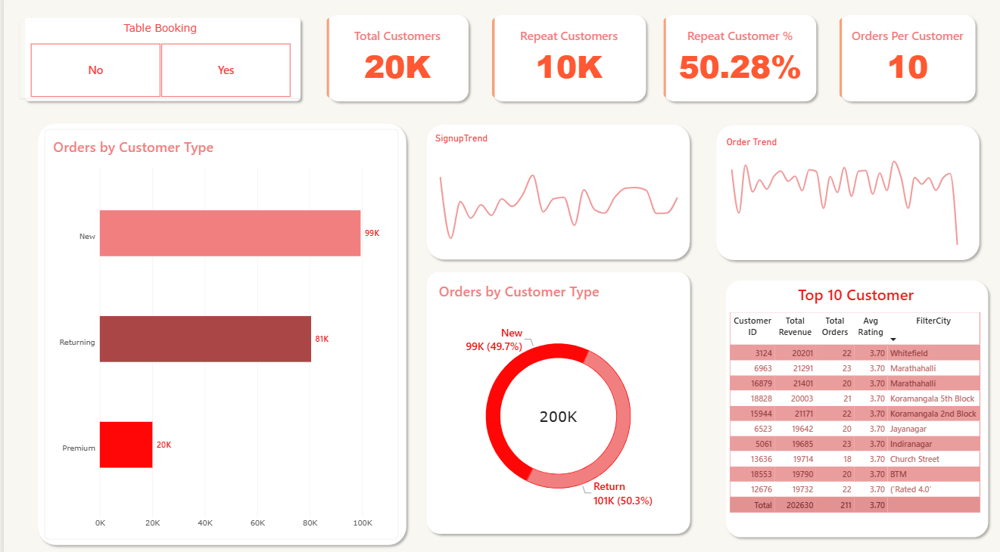
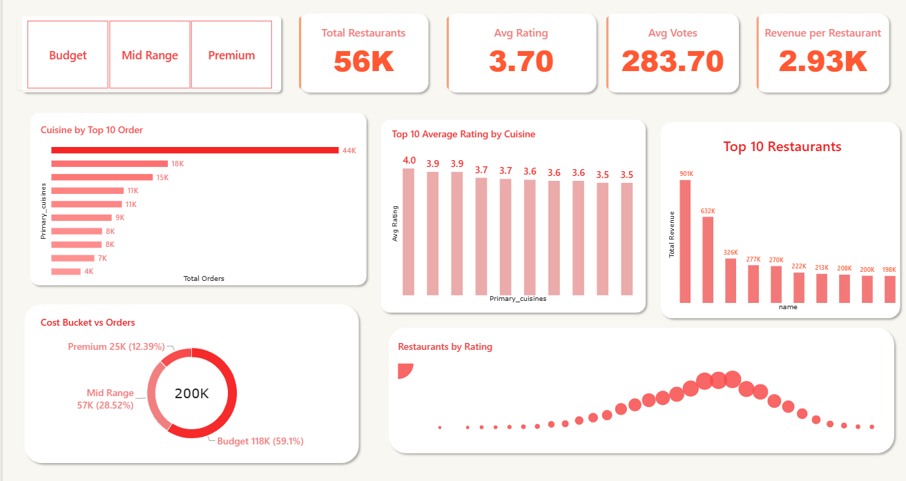
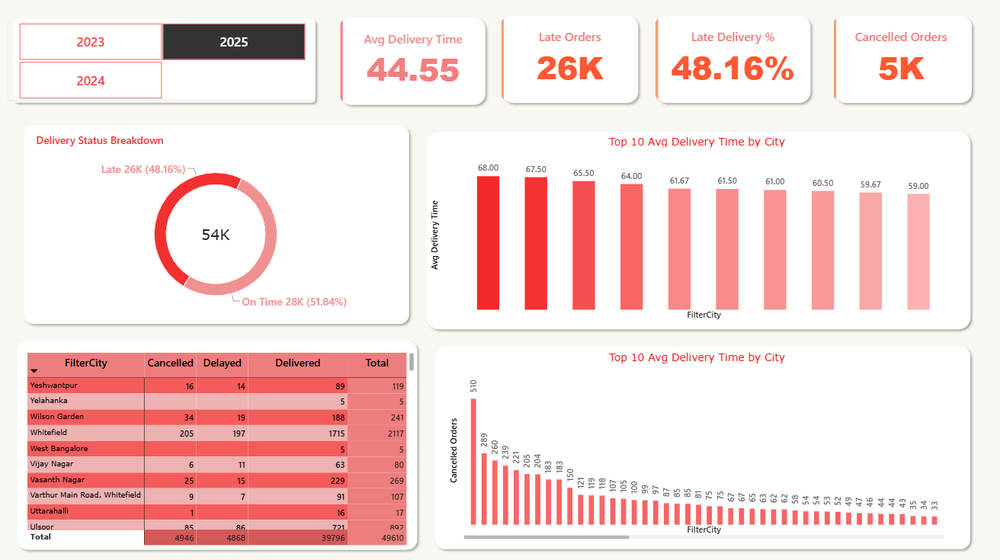
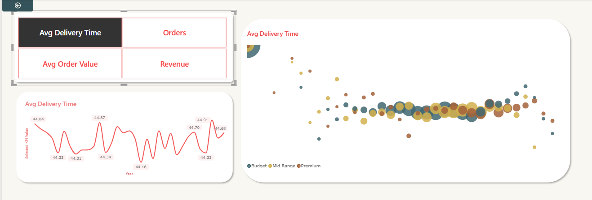
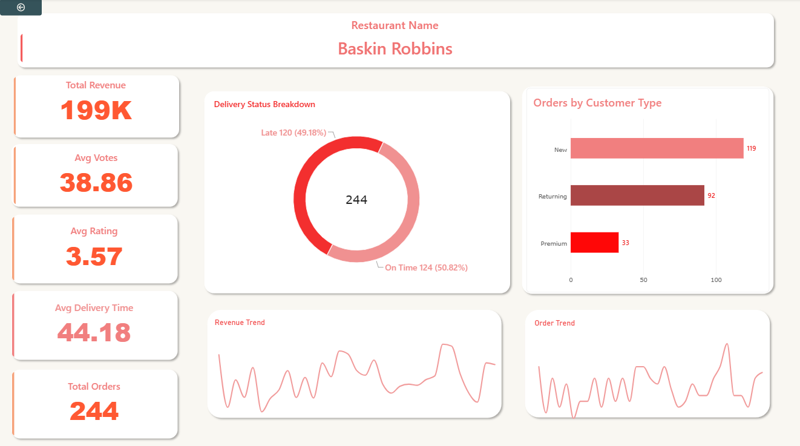
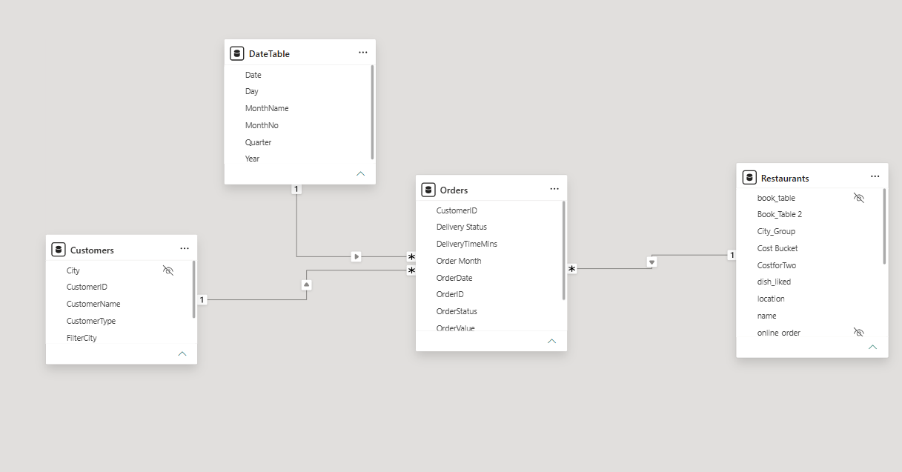
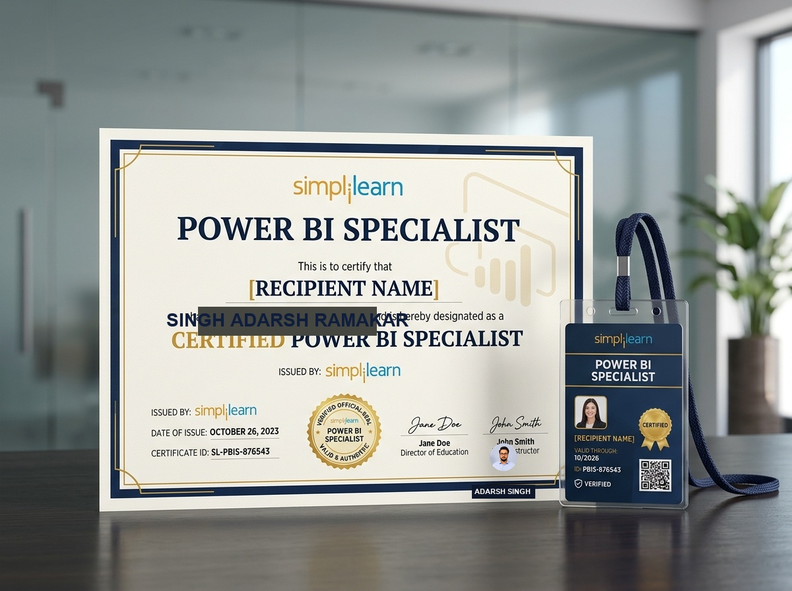
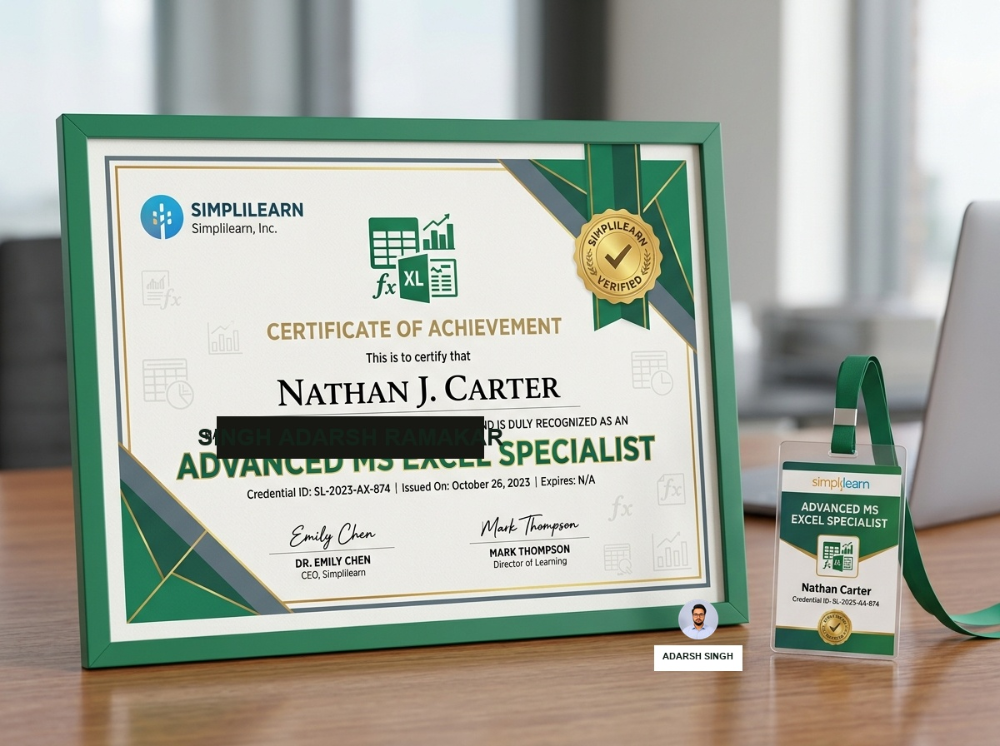

Transforming Complex Data Into Actionable Intelligence
I am Singh Adarsh Ramakar, an MIS Executive with 4+ years of proven expertise in data analysis, dimensional modeling, automated reporting, and executive dashboard engineering using Power BI, Advanced Excel, Power Query, and DAX.
Analytical Mindset & Hands-on Execution
Bridging operational data silos with robust dimensional data models, automated ETL, and intuitive decision-support dashboards.
Core Analytical Philosophy
With over 4 years of dedicated experience in MIS reporting, operational analytics, and dashboard architecture, I specialize in eliminating repetitive manual overhead and establishing trustworthy single-sources-of-truth.
My methodology spans the full data lifecycle: starting with complex transactional data and raw logs, performing data hygiene and dimensional modeling via Power Query & Star Schema, authoring mathematically sound DAX measures, and deploying interactive, drill-down visual dashboards that leadership can act on immediately.
Work Experience Timeline
- Improved order backlog reporting effectiveness by 30% through automated Excel dashboards and automated data insights.
- Enhanced accuracy of daily/weekly MIS reports, reducing data error by 25% and supporting faster management decisions.
- Streamlined manual reporting tasks using advanced Excel formulas & Power Query, saving 6+ hours per week in operational time.
- Automated daily inventory & dispatch reports, reducing manual workload by 50% and improving reporting speed across the operational team.
- Coordinated a team to minimize inventory discrepancies and improved operational efficiency, resulting in 20% faster order processing.
Practiced Tools & Analytics Capabilities
A transparent view of technologies, analytical workflows, and business intelligence techniques applied across real-world operations.
Power BI & DAX
BUSINESS INTELLIGENCEAdvanced MS Excel
SPREADSHEET ENGINEERINGData Transformation & MIS
ETL & MODELINGData Analytics Lifecycle & Soft Competencies
From problem identification to executive storytelling and operational dispatch coordination.
Food Delivery Analytics Dashboard
Comprehensive 6-page interactive business intelligence suite analyzing ~200,000 real-world food delivery transactions. Architected with Power Query ETL, Star Schema dimensional modeling, and advanced DAX measures.






Page 1: Executive Overview
High-level business summary providing owners with instant insights into revenue (₹165M), total volume (200K orders), order status breakdown (80.11% delivered, 9.97% cancelled), and top performing outlets.
End-to-End Analytics Workflow
Built from raw transactional data to executive reporting following rigorous industry data modeling standards:
- 1. Power Query ETL: Ingested ~200K records from Kaggle, performed type coercion, cleaned city text, handled missing fields, and generated clean calculated columns.
- 2. Star Schema Modeling: Separated transaction facts (`Orders`) from dimensions (`Customers`, `Restaurants`, `DateTable`) with clean 1-to-many relationships and single-direction filtering.
- 3. Advanced DAX Measures: Developed measures for Total Revenue, Total Orders, AOV, Delivered %, Cancellation %, Late Delivery %, Repeat Customers, and MoM Growth.
Interactive Capabilities Built
Designed for operational decision-making with seamless business exploration:
- ✔ Dynamic KPI Parameter: Disconnected parameter table + `SELECTEDVALUE` DAX to swap chart metrics without duplicating visuals.
- ✔ Contextual Drill-Through: Right-click on any restaurant name to navigate straight to an isolated store diagnostic page.
- ✔ Delivery SLA Diagnostics: Segmented order delivery times (≤45m vs >45m) to pinpoint operational bottlenecks across courier fleets.
Industry Certifications
Formally certified in Business Intelligence and Advanced Spreadsheet Engineering.

Power BI Specialist Certification

Advanced MS Excel Specialist
Official Resume & Qualifications
Review my credentials, work accomplishments, and download a clean copy.
SINGH ADARSH RAMAKAR
Professional Summary
MIS Executive with 4+ years of experience in MIS reporting, data analysis, dashboard development, and process automation using Excel and Power BI. Proven track record of reducing data error rates by 25%, boosting backlog reporting effectiveness by 30%, and saving 6+ hours weekly through Power Query and automated Excel data modeling.
Technical Skills
- Data Analytics: Data Cleaning, Data Transformation, Data Visualization, Dimensional Modeling, Reporting
- BI & Analytics: Power BI, DAX, Power Query (M), Star Schema
- Spreadsheet: Advanced MS Excel (XLOOKUP, Dynamic Arrays, Pivot Tables), Google Sheets
- Data Transformation: Power Query, ETL Automation, Data Hygiene, Backlog Aging Models
- Presentation: PowerPoint (Executive reporting & data storytelling)
- Soft Skills: Problem-Solving, Attention to Detail, Time Management, Communication, Critical Thinking, Adaptability, Decision-Making
Work Experience
MIS EXECUTIVE — Hathway Cable & Datacom LTD
Dec 2024 – Present | Adajan Surat- Improved order backlog reporting effectiveness by 30% through automated Excel dashboards and automated data insights.
- Enhanced accuracy of daily/weekly MIS reports, reducing data error by 25% and supporting faster management decisions.
- Streamlined manual reporting tasks using Excel formulas & Power Query, saving 6+ hours per week in operational time.
TEAM LEAD & MIS — Shadowfax
June 2021 – Oct 2023 | Kadodara Surat- Automated daily inventory & dispatch reports, reducing manual workload by 50% and improving reporting speed across team.
- Coordinated a team to minimize discrepancies and improved operational efficiency, resulting in 20% faster order processing.
Featured Projects
Food Delivery Analytics Dashboard | Power BI | Power Query | DAX | Star Schema
- Processed and analyzed ~200K food delivery transactions, performing data cleaning, transformation, feature engineering, and dimensional modeling using Power Query and a Star Schema.
- Developed DAX measures and time-intelligence KPIs to analyze revenue, order volume, AOV, customer retention, cancellations, delivery performance, and growth trends.
- Identified high-performing cities and restaurants, repeat-customer behavior, popular cuisines, pricing segments, revenue trends, and late-delivery patterns to uncover key business drivers.
- Built a 6-Page interactive Power BI dashboard with dynamic KPI selection, drill-through, slicers, and cross-filtering to support data-driven decisions across sales, customers, restaurants, and operations.
Certifications
- Power BI — Simplilearn | 2026
- MS Excel — Simplilearn | 2026
Let's Connect & Collaborate
Interested in discussing a data analyst role, consulting on reporting automation, or building a Power BI dashboard?
Contact Information
Direct communication channels. Feel free to copy or click to connect instantly.
Send a Direct Message
Fill out the form below to stage an email inquiry directly to Adarsh.